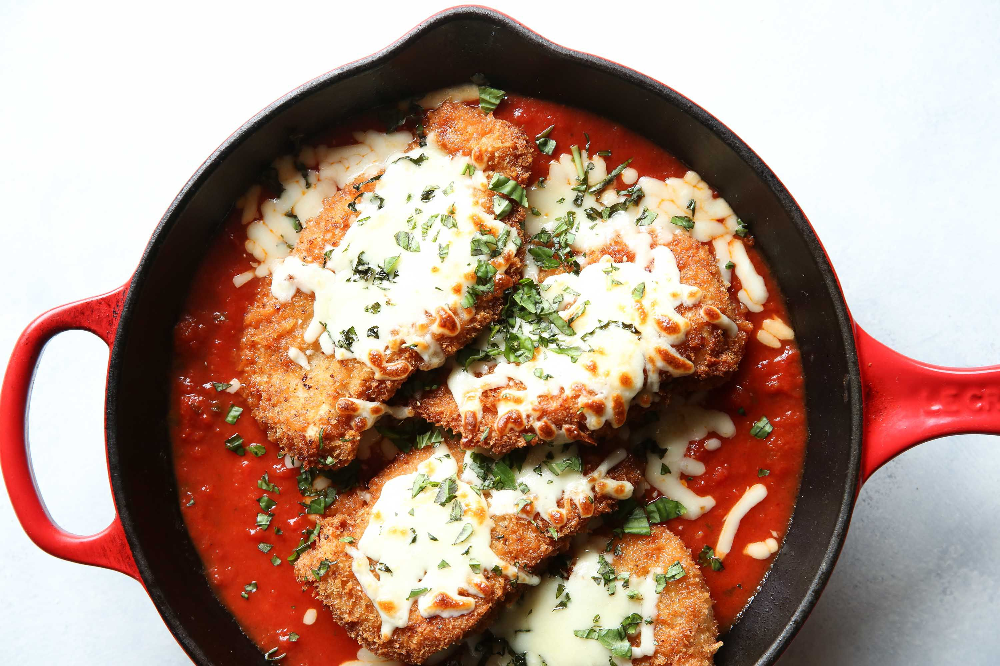

This is Chicken Parm

This is a recipe I found off the internet. I don't particuarly like chicken parm, I just think it has a weird combination of ingredients.
Directions
- Hit the chicken breasts with meat mallet until they are 1/2 inch thick.
- Beat eggs then set them aside.
- Mix Bread Crumbs and 1/2 cup of parmesan cheese, then set that aside too.
- Cover the chicken breats in flour, that means both sides.
- Dip the flour chicken into the eggs then roll it around in the bread crumbs until fully covered.
- Fry that chicken, but not too much because it also has to go in the oven.
- Heat oven to 450 degrees American.
- Cover the chicken in 1/3 cup of tomato sauce, then cover that with cheese, then drizzle with olive oil.
- Put it in the oven until it's done. Eating chicken that is not fully cooked is bad.
Nutrition
| Fat per serving |
Protein per serving |
Carbohydrates per serving |
Total calories per serving |
| 24.9 grams |
42.1 grams |
24.8 grams |
471 calories |